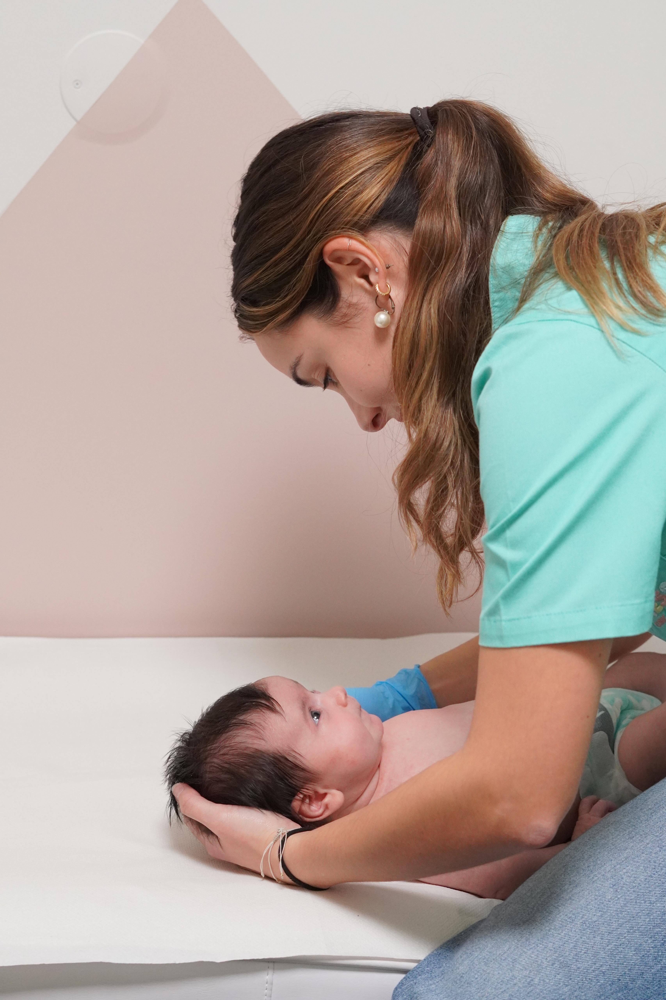
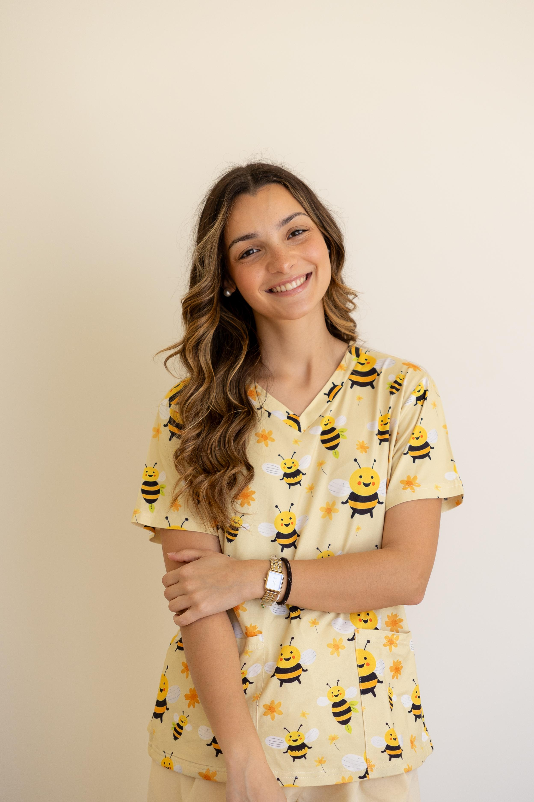
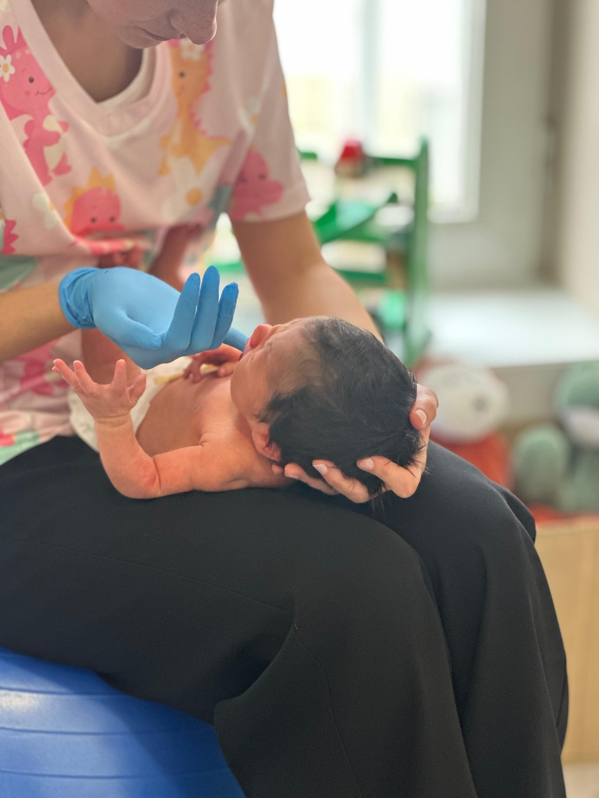

Sobre Inês Silva
Osteopata especializada
Com uma abordagem atenta e personalizada, acompanho bebés e famílias para que cada consulta seja um momento tranquilo, claro e acolhedor.

Missão
Ajudar cada bebé a viver os primeiros meses com mais conforto e bem-estar, trazendo mais tranquilidade, confiança e leveza a cada família.
Formação
Sou licenciada em Osteopatia e tenho várias formações na área da Pediatria e Osteopatia Ginecológica e Gestacional. Estou em constante procura de conhecimento para prestar os melhores cuidados, com a informação mais atualizada.
Osteopatia Pediátrica
A Osteopatia Pediátrica é uma abordagem suave e adaptada a bebés e crianças, com o objetivo de apoiar o seu conforto, mobilidade e desenvolvimento saudável.

Como funciona a primeira consulta?
Começamos por conversar sobre a gravidez, parto e rotina do bebé. Depois faço uma avaliação suave e explico cada passo, para que possa decidir com confiança.
Quando devo marcar?
- Check-up pós-parto
- Em casos de partos instrumentalizados
- Transtornos Gastrointestinais: cólicas, refluxo ou obstipação
- Assimetrias Cranianas
- Dificuldades na Amamentação
- Lado preferencial ou Torcicolo
- Alterações do sono
- Irritabilidade sem razão aparente
- Escolioses ou outras alterações posturais
Em caso de sintomas súbitos, dificuldade respiratória, febre ou outra preocupação urgente, contacte primeiro o serviço de saúde adequado.
Workshop de massagem no bebé
Aprenda técnicas de massagem para promover o bem-estar e fortalecer o vínculo com o seu bebé.

Ver workshop na Escola de PediatriaEntrar em contacto
Para marcar uma consulta, escolha a forma de contacto mais confortável para si.
Entrar em contacto pelo WhatsAppOnde me podem encontrar
Kidness Clinic Foz
Kidness Clinic Póvoa de Varzim
Rua Doutor Josué Trocado 293
4490-618 Póvoa de Varzim (abrir mapa)